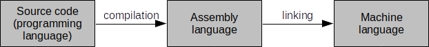
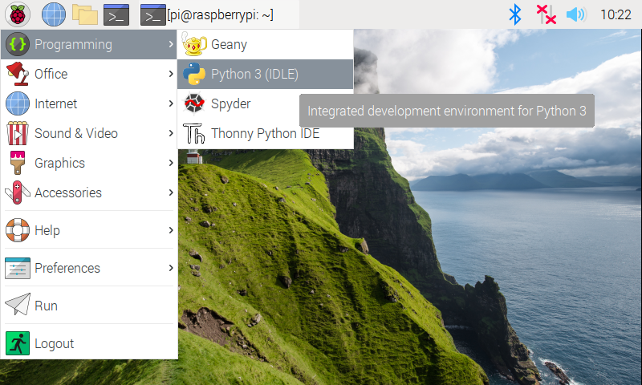
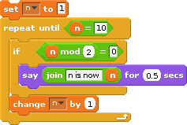

n = 1
while n < 10:
if n % 2 == 0:
print("n is now " + str(n))
n = n + 1n is now 2
n is now 4
n is now 6
n is now 8Machine language is a set of specific instructions that can be executed directly by a computer. This language is typically made up of binary digits (1s and 0s).
A computer can only understand machine language. Machine language instructions are entirely made up of binary digits and can be directly executed by the CPU. Since we have a particularly hard time understanding 1s and 0s, early programmers assigned a set of mnemonics to represent machine code instructions so that they would be a bit more readable. This mapping became known as assembly language. People still write code in assembly language, but it is not typically used to create large scale applications.
The kinds of languages that are widely used today are known as programming languages. Programming languages allow us to represent algorithms in a way that is similar to English but is more structured and much less ambiguous.
A programming language is a precisely constructed language that is specifically used to communicate instructions to a computer.
English is a spoken language. As such, it was spoken first, rules were later defined and written down. Therefore, there are many exceptions (i.e., words and phrases that are grammatically correct but don’t conform to the general grammar/spelling rules). Spoken languages are sometimes ambiguous and open to interpretation. This means that a single statement can have multiple meanings. For example, the statement “I made the robot fast” can mean several different things. Does it mean that the robot was built quickly? Or does it mean that the robot was modified so that it would move around more quickly than it did before? Perhaps it means that the robot is named Fast. Or maybe that we managed to make the robot stop eating nuts and bolts.
Humans rely on external factors like context and body language to understand the true meaning of a statement in a spoken language. And even then mistakes in interpretation still happen. With computers however, we need a language that is so structured and unambiguous that every computer can understand and interpret a given statement in the exact same way. For example, we don’t want two different computers giving us two completely different answers to the arithmetic expression \(1 + 1\). In contrast to spoken languages, programming languages are first defined with rules. The language itself is then derived from those rules. Programming languages are therefore quite structured and not ambiguous. They are very precise and logical.
There are many different programming languages that can be used to describe an algorithm. One of them, for example, is called Python, and it is what we will be using for the majority of the Living with Cyber curriculum. It is the duty of the programmer to write down the tasks that he/she wants done in a given programming language. Since computers can only understand machine language, we utilize an application known as a compiler that translates this programming language into machine language.
A compiler is a tool used to translate an algorithm expressed in a programming language to machine language. The process by which this conversion from programming language to machine language is done is called compilation.
The compilation process takes an algorithm written in a programming language and translates it to assembly language. From there, a process known as linking converts the assembly language to machine language. This is illustrated by Figure 1 below:

Once machine language is generated to match a program, the computer can then directly execute the program and implement the algorithm. A fully compiled language is only executable by a CPU with the same characteristics and operating system (often, including version) as that which it was compiled for. A programmer who wants wide distribution of his software will need to compile source code to the various destination computing architectures and operating systems that are the most likely to be used by the target audience for the application. Of course, the programmer could simply distribute source code and let users compile that themselves. Often, however, programmers do not wish to distribute source code for a variety of reasons (e.g., intellectual property). Figure 2 below shows how a program would need to be compiled numerous times to cover a range of target computing architectures and operating systems:

Not all programming languages are compiled to machine language. Some are never compiled and are executed, one instruction at a time, by an interpreter.
An interpreter is a tool used to evaluate instructions, written in a programming language, as the program is executed.
An interpreter can be thought of as a real time compiler that executes high level programming language instructions, one at a time. Interpreted languages are much slower to execute than compiled languages. Examples of interpreted languages are Python, PHP, JavaScript, and Perl. To execute a program written in an interpreted language, you must have an appropriate interpreter installed on your computing system. Interpreted languages also require programmers to distribute their source code, and users to have an appropriate interpreter installed on their system. Maintaining code privacy is therefore not possible with interpreted languages.
Partially compiled and interpreted languages combine the convenience of interpreted languages (i.e., not having to compile source code to a large number of target machine language executables) and the privacy and speed of compiled languages (i.e., not having to distribute source code).
A hybrid language is a programming language that is compiled down to an intermediate language, and then interpreted (while the program is executed) from there.
Examples of partially compiled languages are Java, Python, and Lisp. Note that Python can be strictly interpreted or partially compiled depending on the programmer’s preferences. The intermediate language is distributed and subsequently executed on any computing platform that has an interpreter for the intermediate language. For example, Java source code is typically expressed in a .java file and partially compiled to Java bytecodes (in a .class file) that can then be distributed. A Java Virtual Machine (JVM) executes the bytecodes by interpreting each instruction, one at a time. The benefit of this method is that a programmer can distribute a single file to everyone, regardless of CPU architecture and operating system. Anyone wanting to execute the file simply needs to have a version of the JVM for their computing system. This is illustrated in Figure 3 below:

Over the past forty years or so, three general classes, or paradigms, of programming languages have emerged. These paradigms include the imperative paradigm, the functional paradigm, and the logical paradigm. In addition, during the past decade or so these paradigms have been extended to include object-oriented features. A language is classified as belonging to a particular paradigm based on the programming features it supports.
Object-oriented imperative languages are, by far, the most popular type of programming language. Both Java and C++ (two of the most used programming languages in industry) are object-oriented imperative languages. Scratch and Python are imperative languages – although Python does contains object- oriented attributes, Scratch does not.
The imperative paradigm is based on the idea that a program is a sequence of commands or instructions (usually called statements) that the computer is to follow to complete a task. The imperative style of programming is the oldest, and now with object-oriented extensions, continues to be far and away the most popular style of programming.
The Living with Cyber curriculum first (and very briefly) utilizes Scratch as the programming language. This is quickly followed by Python. Scratch is not intended to be used to create applications designed for production systems. That is, it is not a general purpose programming language. Instead, it is a teaching tool aimed at simplifying the process of learning to program. Scratch purposefully omits many features available in other popular programming languages in order to keep the language from becoming overly complex. This allows you to focus on the big picture rather than get bogged down in the complexities inherent in real programming languages and their development environments.
One way of thinking about writing Scratch programs is to compare it to programming in a production programming language with training wheels on. Complex and useful programs can be written in Scratch; however, there are many things that programmers are allowed to do in production languages that are not possible (at least not straightforward) in Scratch. For example, Scratch does not support functions and function calls directly, nor does it support recursion directly. These terms may not be familiar right now; however, these restrictions are designed to help beginning programmers avoid making common mistakes.
General purpose programming languages are more robust, and can (and are) used in more situations than educational programming languages like Scratch. Think of it like this: using a programming language like Scratch is like building a Lego house only using 2x4 Lego pieces. While it is possible to do so, there is a limitation on what kinds of houses you can build. Conversely, using more general purpose programming languages is like building a house with any kind of Lego piece you can think up in your mind. There are fewer limitations, and the kinds of houses that you can build are limitless. From this point, we will use Python as the general purpose programming language in the course.
You may have heard about other general purpose programming languages: Java, C, C++, C#, Visual Basic, and so on. So why use Python instead of, say, Java? In the end, it amounts to the simple idea that, unlike all of the other general purpose programming languages listed above, Python allows us to create powerful programs with limited knowledge about syntax, therefore allowing us to focus on problem solving instead. In a sense, Python is logical. That is, nothing must be initially taken on faith (that will ostensibly be explained at a later time). There isn’t any excess baggage that’s required in order to begin to write even simple Python programs.
Recall how, in geometry, the formula for calculating the volume of a cone was given. At that time, it was simply inexplicable. That is, you were most likely told to memorize it. It is not until a calculus course that this formula is actually derived, and how it came to be is fully explained. Why? Well, it is simply because it requires calculus in order to do so. Most students taking a geometry course have not yet had calculus; however, formulas for calculating the volume of various objects (including a cone) are typical in such a course. The problem, of course, is that we are told to take it on faith that it, in fact, works as described. We are told that, how it works and how it was derived, will be explained at a later time. The problem with this is that it forces memorization of important material as opposed to a deep understanding of it (which, in the end, is the goal).
A similar thing actually occurs in a lot of programming languages. Often, we must memorize syntax that will be explained later. Python is unique in that it does a pretty good job of taking all of that out by just being simple. Programming in Python is immediately logical and explicable.
Take the following simple example of a program that displays the text, “Programming rules, man!” in various general purpose programming languages:
// Basic text display program in Java.
public class SimpleProgram
{
public static void main(String[] args)
{
System.out.println("Programming rules, man!");
}
}// Basic text display program in C
#include <stdio.h>
int main()
{
printf("Programming rules, man!\n");
}// Basic text display program in C++
#include <iostream>
using namespace std;
int main()
{
cout << "Programming rules, man!" << endl;
}//Basic text display program in C#
public class SimpleProgram
{
public static void Main()
{
System.Console.WriteLine("Programming rules, man!");
}
}'Basic text display program in Visual Basic
Module Hello
Sub Main()
MsgBox("Programming rules, man!")
End Sub
End ModuleAnd in Python
print("Programming rules, man!")In all of these examples, compiling and running the programs (or interpreting them) produces a single line of output text: “Programming rules, man!” Did you notice that, in all of the examples (except for Python), there seems to be a good bit of seemingly extra stuff for such a simple program? There are a lot of words that you may not be familiar with or immediately understand: class, public, static, void, main/Main, #include, printf, cout, namespace, String[], endl, Module, Sub, MsgBox, and so on. In fact, the only readable version to a beginner is usually the one written in Python. It is pretty evident that the statement print(“Programming rules, man!”) means to display that string of characters to the screen (or console).
Python is extremely readable because it has very simple and consistent syntax. This makes it perfect for beginner programmers. It also forces good coding practices and style, something that is very important for beginners (especially when it comes to debugging and/or maintaining programs). Python has a large set of libraries that provide powerful functionality to do just about anything. Libraries allow Python programmers to use all kinds of things that others have created (i.e., we don’t have to reinvent the wheel). A huge benefit of Python is that it is platform independent. It doesn’t matter what operating system you use, it is supported with minimal setup and configuration, and there is no need to deal with dependencies (i.e., other things that are required in order to just begin to code in Python).
Don’t think that, because of its simplicity, Python is therefore not a powerful language (or perhaps that it doesn’t compete with Java or C++). Python is indeed powerful, and can do everything that other programming languages can do (e.g., it does support the object-oriented paradigm). It is based on a few profound ideas (collectively known as The Zen of Python written by Tim Peters)
The name of the Python programming language is taken from a television series called Monty Python’s Flying Circus (and not from the snake).
Many programmers write their programs in a general purpose programming language using nothing but a text-based editor (usually a simplistic one, albeit with useful characteristics such as syntax highlighting). In fact, some write programs at the command line (in the terminal) using nothing but a text-based text editor (i.e., without graphical characteristics). Most programmers, however, use an IDE (Integrated Development Environment).
An Integrated Development Environment (IDE) is a piece of software that allows computer programmers to design, execute, and debug computer programs in an integrated and flexible manner.
On the Raspberry Pi, the IDE used to design Python programs is called IDLE (which stands for Python’s Integrated DeveLopment Environment). Other IDEs exist for pretty much all of the most used general purpose programming languages: Eclipse, Visual Studio, Code::Blocks, NetBeans, Dev-C++, Xcode, and so on. In fact, many of these IDEs support more than one language (some natively, others by installing additional plug-ins or modules)! Here’s an image of IDLE with the program shown earlier implemented (and executed):

On the Raspberry Pi, IDLE can be launched as follows:

Python programs can also be created and executed at the command line (or terminal). We do so by launching a terminal and typing python, which brings up the Python shell:

On computers that have two alternate versions of python installed on them, you might have to type python3 as the command to open up a python shell like the one in the image.
Earlier in this lesson, you learned that programs written in a programming language are either compiled (to machine language so that a computer can execute them directly) or interpreted, statement-by-statement (in a sense, you could say that programs written in interpreted languages are compiled, line-by-line, in real time). Python is an interpreted language that implements the imperative paradigm. That is, programs are designed as a sequence of instructions (called statements) that can be followed to complete a task.
Let’s take a look at a simple program in Scratch and see how it compares to the same thing in Python:

What does this program do? Simply put, it displays the numbers 2, 4, 6, and 8. Take a look at the script above. The variable n is initially set to 1. A repeat-until loop is executed so long as n is less than 10 (i.e., 1 through 9). Each time the body of the loop is executed, the string “n is now (plus the value of n)” is displayed if n is evenly divisible by 2. For example, if n is 4, then the string n is now 4 is displayed. Recall that the mod operator returns the remainder of a division. Therefore, when n mod 2 = 0 is true, it means that the remainder of n divided by 2 is zero – so n must be even! At the end of the body of the loop, the variable n is incremented (ensuring that n will eventually reach the value 10, and we will break out of the repeat-until loop).
Here’s how this can be similarly done in Python:
n = 1
while n < 10:
if n % 2 == 0:
print("n is now " + str(n))
n = n + 1n is now 2
n is now 4
n is now 6
n is now 8At this point, it is fine if you don’t understand everything that’s going on syntactically. The idea is simply to illustrate how Scratch and Python differ (and are similar!). But let’s try to explain.
The block, set n to 1, in Scratch is implemented in Python as, n = 1. Pretty similar!
Python has no repeat-until repetition construct. Instead, we can use a while construct with a modified condition. Repeating a task until a variable (in this case, n) is 10 is the same thing as repeating it while the variable is less than 10.
If-statements are similar; however, the mod and equality operators differ. In Python, we check for equality using the double-equal (==) operator. The mod operator is a percent sign (%). So the block, if n mod 2 = 0, in Scratch can be implemented in Python as, if n % 2 == 0.
Generating the output, “n is now 4,” for example, can be implemented in Scratch using the familiar print statement: print ("n is now 4"). Of course, we don’t always want to display the literal string “n is 4”. So we concatenate (or join) the value of n to the string “n is now” just as we did in Scratch. However, since n is not a string of characters (i.e., it is a number – an integer to be precise), then it must first be converted to a string before being concatenated to another string. This is what str(n) does.
Finally, the value of n is incremented by 1 with the statement n = n + 1.
In Scratch, it is easy to see the blocks that belong in the body of a repetition construct. The puzzle pieces intrinsically capture this (i.e., they are quite literally visible inside the repeat-until block in the script above). In Python, we denote statement hierarchy (i.e., if statements belong in the body of a construct such as a while loop) by using indentation. Note how it is quite clear which statements belong in the body of the while loop above: the if-statement and the statement that increments the variable n by 1. Note that the print statement is inside the true part of the if-statement (this is evident by how it is directly beneath the if-statement and indented further to the right). Again, at this point it is fine to have a minimal grasp of Python’s syntax.
Open your IDE of choice (e.g. IDLE) and follow along with the professor as they try out different code snippets in the python shell. This activity should give you an idea of
the kinds of operators and expressions that are possible in the python shell.
how to execute print statements consisting of different kinds of data
how to prompt the user for some input in the middle of code execution
storing values in variables
using variables and the values stored within as part of other expressions.
You should be able to understand every single statement in the snippet below and even create a similar sequence on your own with a clear grasp of what each statement is doing.
a = 10
b = 15
print(f"{a} ^ {b} = {a**b}")
print(a + 6)
c = input("What is your name?")
print(f"Hello {c}")
d = input(f"so {c}, How old are you?")
e = int(d)
print(f"You are {e} years old and you will be 100 in {100-e} years")So far, we have been entering statements in the Python shell. These statements have been interpreted, one at a time. If we were to close the Python shell, everything that we entered would be lost. In order to save Python programs, we must type them in a separate editor outside of the Python shell, save them in a file. Once this has been done, we can then execute them in the Python shell.
To create a new Python program, click on File | New File (or press Ctrl+N) in the Python shell. This brings up a new window (an editor that is a part of IDLE) in which we can type our program. Type the following program into this new window:
a = int(input("Enter a number: "))
b = int(input("Enter another number: "))
print(f"{a} raised to the power {b} is {a**b}")If you are using IDLE, this is what your window should look like.

Note that when editing a python file, there will NOT be any >>> symbols on the left of your lines of code. If you see those symbols, that means you are still within the shell and not in an actual python file.
Before we can run this program, it must be saved. Do so by clicking on File | Save (or press Ctrl+S). Give it an appropriate name, and save it to an appropriate location. Now it can be executed by clicking on Run | Run Module (or by pressing F5). This executes the program in the Python shell:

You can run your code any number of times by selecting Run | Run Module (or pressing F5). If your code requires some input from the user, each execution affords you an opportunity to try out different input options e.g. inputing different numbers to see what one raised to another is.